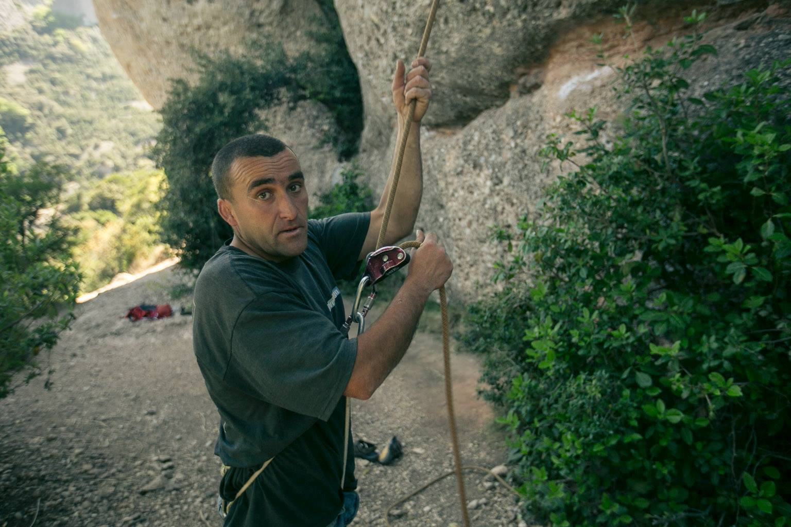

As we reached the mystery man across the valley, his features came into focus. His skin was tan and weathered but he wasn’t old. Next to him stood a large squat dog that looked like the canine version of himself. Buff, gruff, and missing a few teeth. The man introduced himself as Oscar and his dog as Itor.
We didn’t know this man. Hours earlier, my partner Nate and I had started our day in a cafe in Barcelona. We had no idea we would end our day in the mountains of Montserrat, Spain face-to-face with a gruff mountain stranger.
“Nate, do you want to order the next muffin? Or should I?” I asked while wiping crumbs off my lap from previous pastries consumed that morning. Nate smiled and kissed me,“I’ll get it.” He said as he rose and moved toward to counter. We’d already devoured an assortment of muffins, churros and miguelitos. The surface of the table wasn’t visible underneath all the crumbs, tiny white pastry plates, espresso cups, and two open laptops displaying various Spanish national park websites.
The floor around us wasn’t visible either. We had jammed ourselves into the corner of a cafe and barricaded ourselves behind a wall of 80-liter backpacks, hiking boots, tent poles and all the other camping gear which spilled out of our insufficiently spacious luggage. We were desperately searching online for directions out of Barcelona to the first place we could pitch a tent. This particular Barcelona cafe had a wifi system I’d never before encountered, one that deterred the USA-college-town tradition of buying a small cheap coffee and spending the rest of the day occupying space in the cafe, behind the glow of a laptop. On each purchase, I’d receive a receipt containing a wifi password but the wifi password changed automatically every 30 minutes, meaning I needed to get another receipt, meaning Nate and I consumed an unusually large amount of pastries and coffee that morning.
In the weeks leading up to our backpacking trip to Europe, Nate and I had heard amazing things about Barcelona. “You have to see La Sagrada Familia.”
“Go to all the restaurants.”
“The party scene is to die for.”
Our first 24 hours in Barcelona only revealed that the kind of adventure we were looking for, wouldn’t be found in a city. We wanted to find a place where our camping gear stopped being a burden and could instead become our home.
Oscar wasn’t much for words. He also wasn’t much for smiles. In fact, the two days Nate and I spent with Oscar, we didn’t see him smile once. His brows were often furrowed, and he had deep creases that ran from either side of his nose to the corners of his mouth. His rigid expression and quick intentional movements always made it seem like he was on a mission. And maybe we was on a mission. At one point during our weekend together, he told me he lived for climbing and nothing else.
It took two hours of snacking and web browsing in the cafe before Nate and I found directions to a campsite in the countryside in a small town called Montserrat. We shoved our strewn belongings back into my burnt orange Osprey backpack and Nate’s smoke blue Gregory, hefted them onto our backs, and lumbered out the door.
No more than 20 steps down the sidewalk, we reached our subway entrance. Two subways, a train, and a bright yellow gondola later, Nate and I found ourselves halfway up a mountain, hours from Barcelona, and standing outside the gates of a campsite. We shucked our backpacks to the dirt to look around.
“It doesn’t look very open” I said. I poked my nose through the campground’s front gate and gripped the metal thatching on either side of my face. Deserted. “We need to start formulating a plan B.”
Pacing, Nate didn’t say anything for a few minutes. Meanwhile, I sat on a log looking defeated. The campsite was empty, the service counter next to the front gate appeared to be boarded up and we were in the middle of nowhere… in Spain. Nothing seemed more comforting to me in this moment than the idea of a pitched tent and a warm sleeping bag. At least both those items were tucked away safely in our possession.
“Worst case, we’ll hike one of Montserrat’s million trails and find a place to sleep just off the trail and just out of sight” Nate said. His words were comforting, and I knew he was right. Before we could start executing our worst case scenario (aka plan B, aka pitch-tent-inconspicuously-off-trail) we spotted a couple walking down the road toward us. I called out,
“Hey! Do either of you happen to know if the campsite is open?”
“Did you try the doorbell?” the woman said and pointed to a rope and a small sign that read “timbre”. Of course. The doorbell. Nate pulled the rope, a small bell sounded, and moment later we heard shuffling from within the reception hut.
An hour later, our tent was pitched, camp set up, and we were already on one of Montserrat’s famous hiking trails.
When we first met Oscar, we had only exchanged a few words before he told us to follow him off the main trail toward the cliffs. Nate and I followed but we exchanged a few nervous glances. We both had the same thought: Are we safe? Should we follow this man?
We’d been going for a couple miles before Nate noticed something that would change the whole trip: chalk on the walls. As all rock climbers know, chalk on a wall is evidence of other rock climbers.
“Here,” Nate said and handed me our lunch-pack. He took his shirt off and threw it in my direction. I caught it with my only free hand. As Nate tackled the nearest climbing boulder, I stood there with lunch-pack and shirt dangling from either arm and took a moment to look around at where we were. We stood in a narrow valley made of a combination of rolling boulders and sheer sandy cliffs. Pine trees were sprinkled around in the grooves where they could find enough dirt. Before I could take it all in, a yell broke my concentration.
“Aseguras?” a man’s voice called. Gruff and distant, I couldn’t tell where the voice was coming from. I looked around. “Aseguras?” the man’s voice called again. This time I spotted him. Across the valley on a large flat boulder, the man stood with his hands cupped over his mouth getting ready to call to us again. I waved at him. I didn’t know what he was asking, but I knew it was directed at Nate and me. “Aseguras?” he called again. What did that mean? He pointed to Nate who had scaled several feet up the boulder, each limb playing a crucial role in keeping his body pressed against the stone and keeping him from falling.
“Do you know what he means?” Nate asked. I was the “official” spanish speaker of our duo, but I hadn’t needed to use the language in years. Nor did I know what this mystery-boulder-man was saying.
“I’m thinking,” I said to Nate.
What did aseguras mean? I knew “seguro” meant “safe” in spanish, could “asegurar” mean to “make safe”? If that was the case, the mystery-boulder-man was asking us if we could “make safe”. Then it hit me. He was pointing at Nate who was rock climbing and asking us if we could “make safe”.
“Nate, he wants us to belay for him!” I said.
“Hell yeah!” Nate said, and let go of the wall.
“Si! Podemos asegurar!” I called across the valley to the distant man and gave him the international thumbs up. He motioned us over and started treading away into the pines on the other side of the valley. Nate and I scrambled to catch up. We sprinted down the trail, back the way we came.
 Oscar himself